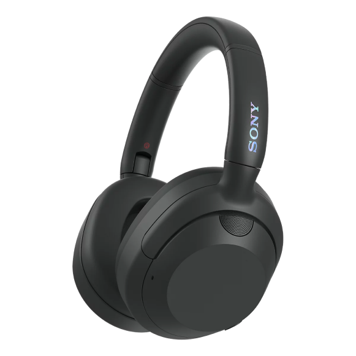

- 매일 한층 몰입감 넘치는 음악
- 모든 방향에서 울려 퍼지는 사운드에 흠뻑 빠져 보세요.
- 콘서트장이나 아티스트의 레코딩 스튜디오에 가 있는 착각에 빠질 정도로 생생한 사운드가 전달됩니다. 360 Reality Audio로 이제까지 접해보지 못한 새로운 차원의 몰입 감과 생생한 사운드를 즐길 수 있습니다.

강력한 사운드
사운드 미세 조정
최대30시간 배터리
사운드 복원
편안한 디자인
일상적인용도
강력한 사운드
사운드 미세 조정
최대30시간 배터리
사운드 복원
편안한 디자인
일상적인용도